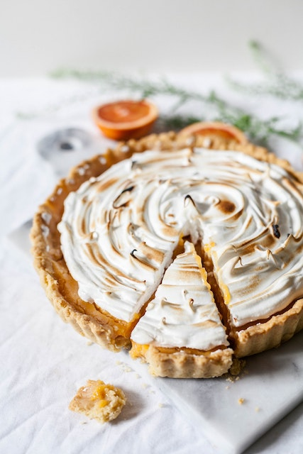

Lime Meringue Pie

Amazing Lime Meringue Pie!
This pie is so amazing and you should make it.
Recipe from BBC Good Food.
Photo by Alex Lvrs on Unsplash.
Ingredients:
- 2 tbsp cornflour
- 125g golden caster sugar
- 6 limes juiced (you’ll need 150ml juice), 2 zested
- 100g unsalted butter, cut into cubes
- 4 egg yolks (use the whites in the meringue, below)
For the pastry
- 200g plain flour, plus extra for dusting
- 1 tbsp golden caster sugar
- 125g cold unsalted butter, cut into cubes
- 1 egg, beaten
For the meringue
- 4 egg whites, at room temperature
- 200g golden caster sugar
- 2 tsp cornflour
Steps:
- For the pastry, put the flour, sugar and a pinch of salt in a bowl and rub in the butter using your fingers until crumbly. Mix in the egg until a dough forms, then flatten into a disc, wrap and chill for at least 30 mins. Will keep covered and chilled for two days.
- Heat the oven to 200C/180C fan/ gas 6. Roll the pastry out on lightly floured surface to about the thickness of a £1 coin, and use it to line a 23cm fluted tart tin, with some overhanging. Line the pastry case with baking parchment and fill with baking beans. Bake for 15 mins, then remove the parchment and beans and bake for 10-15 mins more, or until biscuity. Trim the overhanging pastry with a serrated knife. Leave to cool. Turn the oven to 180C/160C fan/gas 4.
- While the pastry bakes, combine the cornflour, sugar and lime zest in a medium saucepan. Stir in the lime juice and gradually add 50ml water. Cook over a medium heat, stirring continuously until thick and smooth. Once bubbling, remove from the heat and beat in the butter using a whisk until melted. Beat in the egg yolks, then return to the hob over a medium heat, stirring vigorously for a few minutes until you have a thick custard consistency. Remove from the heat, cover and set aside to cool slightly.
- Meanwhile, for the meringue, put the egg whites in a large bowl. Whisk to soft peaks, then add half the sugar, a spoonful at a time, whisking between each addition until just combined. Whisk in the cornflour, then add the remaining sugar, a spoonful at a time, until the meringue is smooth and thick.
- Pour the warm lime filling into the pastry case. Spoon meringue on top, near the edge, then gently spread out to just touch the pastry rim. Pile the rest of the meringue into the centre, spreading it out gently and swirl the top. Return to the oven for 20 mins until the meringue is crisp and just golden. Leave to cool in the tin for 30 mins. Transfer to a wire rack and cool for 30 mins-1 hr, then slice and serve. Best eaten same day, but will keep chilled for up to a day.